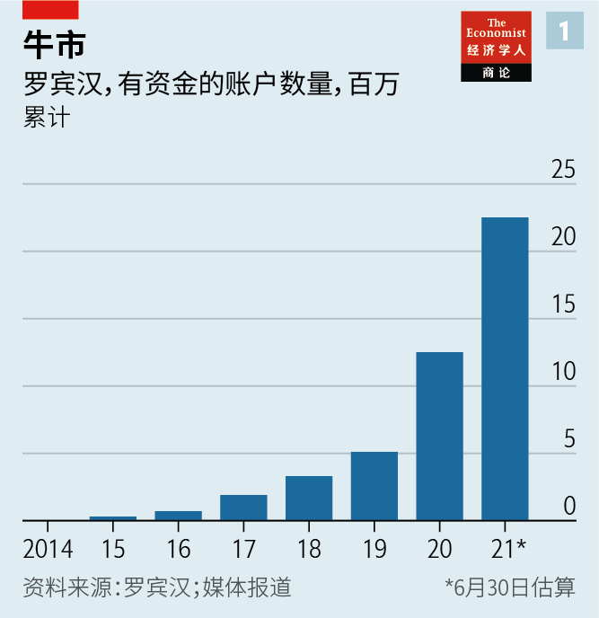
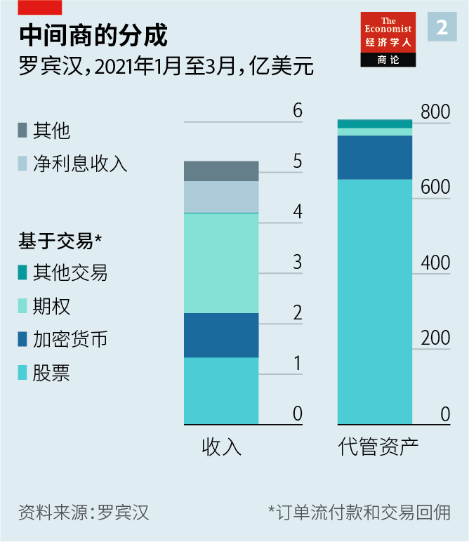
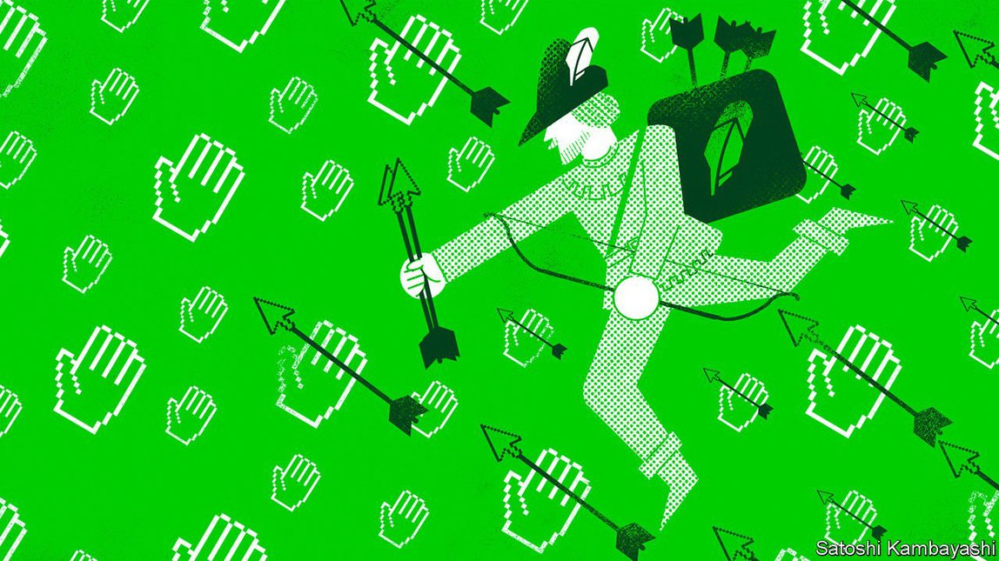
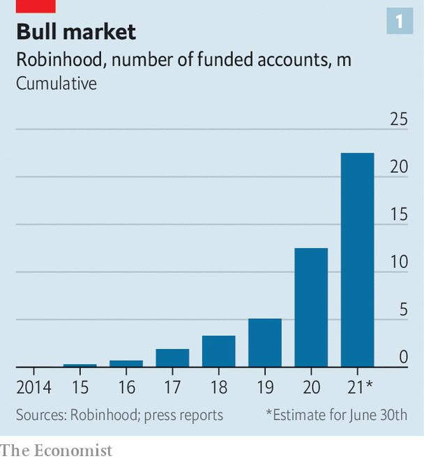
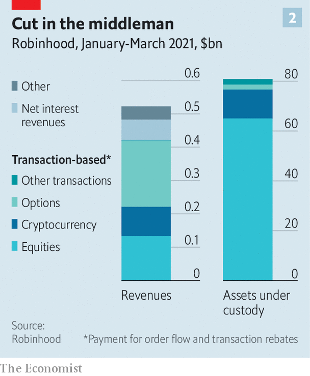

2021-08-10T16:15:46+00:00
罗宾汉与快乐民众
罗宾汉的IPO向普罗大众开放
本刊驻华尔街记者也参与其中

对于一家自诩要实现“投资民主化”的公司来说，或许也只能以这种方式上市了。7月29日（即本刊新一期付印之后），罗宾汉（Robinhood）在纳斯达克上市。如往常一样，机构投资者可以在交易所购买和交易其股票。但不同寻常的是，这家券商还计划将自己三分之一的股票配售给其平台用户。
笔者申购了一股罗宾汉股票，第一次参与IPO，内心一阵激动。一张张精美的图表解释了IPO股票将如何分配，还向投资者保证，申购数量、资产规模和开户时长完全不会影响中签与否——这一点与其他券商截然不同。大多数公司在上市前都会举行路演，通常由投行人士制作出漂亮的幻灯片，穿上最考究的西装奔赴各大城市，在会议室里争取养老基金、资产管理公司和其他机构投资者的支持。罗宾汉却只是在上市前的周六下午在网上向任何有兴趣一听的人做了40分钟的宣讲。
这种反建制的方法再合适不过了。没有哪家公司的命运像它这样与散户对神股的疯炒息息相关，而散户的这种狂热又是受了网上论坛和抗疫封锁带来的闲暇时间推波助澜。罗宾汉将以320亿美元的估值上市，其用户群在疫情期间呈爆炸式增长（见图表1）。它的前景很可能取决于这轮散户狂潮接下来卷向哪里，这种狂热已经令监管部门大为抓狂。
几十年来，散户投资者一直被忽视和怠慢。富人可能已经直接涉猎股票交易，但大部分工薪阶级还只能依靠固定收益养老金，这就把他们最大的一笔储蓄的投资组合管理决策全部交给了养老基金。之后他们开始转向自我管理的401K养老金计划、注册投资顾问和零售券商，但一开始交易价差巨大，收费也十分昂贵。
后来，新技术的应用帮助缩小了价差——例如计算机化交易和超高速做市算法。2013年，曾在做市商工作的罗宾汉创始人白朱·巴特（Baiju Bhatt）和弗拉德·特涅夫（Vlad Tenev）发现，零售券商有可能靠向客户提供免佣金的股票交易赚钱。它们可以转而从“订单流付款”赚取收入。在这种做法下，零售券商将其顾客的交易引流给高频做市商，做市商支付一部分交易差价作为回报。
开始的一段时间里，大型零售券商根本没有将这个大胆的新贵放在眼里，继续收取佣金和费用。但到了2019年，变局已经势不可挡。一场迅速而残酷的价格战爆发了。先是嘉信理财（Charles Schwab），然后是E*Trade、德美利证券（TD Ameritrade），最后是最大的券商富达（Fidelity），各家券商纷纷屈服，取消了佣金和交易费。
对投资者来说，降低成本值得称许。在罗宾汉的路演中，特涅夫声称，他的公司帮助人们购买心仪公司的股票，并激发他们对投资的兴奋情绪。据罗宾汉统计，美国自2015年以来开设的所有经纪账户中，有一半是在它的平台上开户的。但这家券商也处于散户革命引发的震荡的震中。今年早些时候，在围绕深陷困境的电子游戏零售商游戏驿站（GameStop）的投机狂潮中，这场革命达到了顶峰。该公司的股价在1月时还是17美元，两周后冲破450美元。这些散户的交易量如此巨大，且很大一部分经由罗宾汉下单，以至于它被迫暂停了游戏驿站股票的交易，因为在用户成交和结算之间有两天的时间差，而它没有足够的资金满足期间的保证金要求。
罗宾汉的成功令人不安，原因有二。首先，交易成本降低，人们往往会更频繁地买卖。据该公司IPO文件显示，约有半数用户每天都在应用上查看自己的投资。但大量研究文章指出，用户交易得越多，回报反而越低。另一个担忧是罗宾汉让用户接触高风险产品。股票交易等常规业务的利润率最低，但随着客户涉足风险更大、更复杂的市场，例如交易衍生品或购买加密货币，利润率就会提高。尽管期权和加密货币在罗宾汉800亿美元的代管资产中只占17%，但却贡献了一半以上的交易收入（见图表2）。
出于这些担忧，议员们质疑散户投资者到底能否通过罗宾汉获益。游戏驿站事件发生后，特涅夫在被美国国会传唤时声称，与用户最初存入其平台的资金相比，他们通过购买股票和投资赚到的收益已逾350亿美元。但他遭到了来自康涅狄格州的众议员、前银行家吉姆·希姆斯（Jim Himes）的猛烈抨击。“350亿美元这个数字毫无意义，除非你把它转换成收益率，这样我才能把它和美国国债相比较，和标普500指数相比较。”特涅夫回避了这个问题，声称要和“完全不投资”这个更低的标准做比较才对，因为罗宾汉的许多客户都是交易新手。
该公司为散户投资者赋权是否可取不仅仅是个哲学问题，也是任何投资罗宾汉的机构或者散户都必须思考的关键问题，因为这关系到潜在风险和回报的所在。在这个问题上，投资者和监管者似乎也存在分歧。
对潜在持股者来说，下行风险是罗宾汉看起来难以逃脱监管机构的审查。这家券商长达300页的招股书中相当大的篇幅都在讨论其业务面临的主要风险。其中包括可能引入的金融交易税，这可能会让它无法再提供免佣交易，并打消客户每天都做交易的念头。招股书也承认，占罗宾汉收入80%的订单流付款有被监管机构限制或禁止的可能。
事实上，美国证券交易委员会主席加里·詹斯勒（Gary Gensler）曾表示，证交会正在密切研究当前的市场结构是否会造成利益冲突。主持游戏驿站听证会的众议院金融服务委员会已经起草了一项法案，计划叫停订单流付款。
然而，投机的散户对罗宾汉的热情仍远高于监管机构，这又为潜在投资者提供了上行空间。此前普遍的看法（包括本刊过去的报道在内）是游戏驿站事件可能成为罗宾汉的祸根；它最初的拥护者可能会因为它暂停了游戏驿站股票的交易而感到被背叛并弃用该平台。但从该公司的用户数来看，“所有的宣传都是好宣传”这句俗语仍然有效。仅在2021上半年，罗宾汉上就新开了超过1000万个有资金的交易账户，账户总数增长80%。如果说散户狂热有一点长久不变，那就是它的完全不可预测。也许正因为如此，笔者对自己只申购了一股感觉良好——在一边旁观就心满意足了。
2021-08-10T16:15:46+00:00
Robinhood and the merry mob
Robinhood takes its IPO to the masses
Our Wall Street correspondent participates
IT WOULD BE hard for a firm that describes itself as “democratising investing” to go public in any other way. When Robinhood lists on the Nasdaq on July 29th, after The Economist goes to press, institutional investors will, as is usual, be able to buy and trade shares on the exchange. Less conventionally, the broker also plans to sell a third of the shares in itself to its users.
Your correspondent felt a frisson of excitement as she took part in an initial public offering (IPO) for the first time, bidding for a single share in Robinhood. The slick graphics explained how IPO shares are allocated, and reassured punters that—as is not the case at other brokers—order size, assets and the age of the account would play no part in whether a bid was accepted or not. Before most firms go public they do a roadshow, which typically involves investment bankers compiling snazzy slideshows, donning their sharpest suits and fanning out to meeting rooms in big cities to canvass support from pension funds, asset managers and other institutional investors. Robinhood instead made its 40-minute pitch online to anyone who wanted to listen, on the Saturday afternoon ahead of its debut.
The anti-establishment approach is all too fitting. No other company’s fortunes have been as tied to the craze for meme stocks, fuelled by online forums and lockdown-induced spare time. Robinhood, which will go public at a valuation of $32bn, has seen its user base explode during the pandemic (see chart 1). Its prospects are likely to be determined by wherever the retail mania, the subject of much regulatory hand-wringing, goes next.
For decades retail investors were overlooked and underserved. The rich might have dabbled in trading stocks directly, but most workers earned defined-benefit pensions, which kicked any portfolio-management decisions regarding their biggest pot of savings to pension funds. The transition to self-directed 401K retirement plans, registered investment advisers and retail brokers was at first accompanied by wide trading spreads and meaty fees.
Then the adoption of new technologies—such as computerised trading and wicked-fast marketmaking algorithms—helped erode spreads. In 2013 Baiju Bhatt and Vlad Tenev, Robinhood’s founders and former employees of marketmakers, saw that it might be possible for a retail broker to make money by offering consumers commission-free stock trading. It could instead earn revenues through “payment for order flow”. This is the practice by which a high-frequency marketmaker pays a broker a cut of the spread it earns from trading in exchange for the broker directing its customers’ trades to the marketmaker.
For a time the big retail brokers ignored the plucky upstart and continued to charge commissions and fees. But by 2019 the writing was on the wall. A quick, brutal price war broke out. Charles Schwab, followed by E*Trade, TD Ameritrade and eventually the biggest broker of all, Fidelity, succumbed, scrapping their commissions and trading fees.
Lower costs for investors are a laudable thing. At Robinhood’s roadshow Mr Tenev claimed that his firm helped people buy shares in firms they love and got them excited about investing. By Robinhood’s reckoning, half of all brokerage accounts opened in America since 2015 have been set up on its platform. But the broker has also been at the centre of unease about the retail revolution, which peaked during the speculative frenzy in GameStop, a struggling video-game retailer, earlier this year. The company’s share price spiked from $17 in January to more than $450 two weeks later. So much of the trading volume came from retail investors, and so much of it was directed through Robinhood, that the broker was forced to suspend trading in GameStop because it lacked the capital to cover the two-day lag between its users’ trades and their settlement.
The queasiness over Robinhood’s success stems from two sources. For a start, when the price of something falls, people tend to do more of it. According to data in the firm’s IPO filing, around half of its users check their investments on its app every day. But plenty of research papers find that the more people trade, the worse their returns. Another concern is that Robinhood exposes its users to risky products. Its profit margins are slimmest for the vanilla stuff, like stock trading, but rise as its customers dabble in riskier, more complicated markets, such as trading derivatives or buying cryptocurrencies. Although options and cryptocurrencies make up about 17% of the $80bn in assets that Robinhood oversees, more than half of its transaction revenues come from these categories (see chart 2).
These worries have led lawmakers to question whether retail investors stand to make any gains from Robinhood. Summoned to Congress after the GameStop affair, Mr Tenev claimed that its users had earned more than $35bn in profits by buying stocks and investments, compared with what they had deposited with the broker. But Jim Himes, a congressman from Connecticut and a former banker, skewered him. “$35bn is a meaningless number unless you convert it to a rate of return so that I can compare it to Treasuries, so I can compare it to the S&P 500.” Mr Tenev deflected, claiming the right comparison was the lower bar of “not investing at all” because many of Robinhood’s customers were new to trading.
Whether the firm’s empowerment of retail investors has been desirable or not is more than a philosophical matter. It is also the key question that any investor in Robinhood, institutional or retail, will have to wrestle with, because it pertains to where the potential risks and rewards lie. It is also a subject on which punters and regulators seem to disagree.
The downside for potential shareholders is that Robinhood is unlikely to escape the scrutiny of regulators. Much of the broker’s 300-page prospectus discusses the main risks to its business. These include the possible introduction of a financial-transaction tax, which might scupper its ability to offer free trading and deter customers from trading every day. It also allows for the possibility that payment for order flow, which accounts for 80% of Robinhood’s revenues, might be restricted or banned by regulators.
Indeed, Gary Gensler, the head of the Securities and Exchange Commission, has said his agency is looking closely into whether the current market structure creates conflicts of interest. The financial-services committee of the House of Representatives, which hosted the GameStop hearing, has drafted a bill that bans payment for order flow.
Retail punters, however, remain far more enthusiastic about Robinhood than regulators, which provides potential investors with an upside. It was common (including in the pages of The Economist) to expect that the GameStop episode could be the undoing of Robinhood; that its original adopters might feel betrayed by the firm’s suspension of trading in GameStop and junk the app. But the company’s user numbers suggest that the adage “all publicity is good publicity” still holds. In the first half of 2021 alone more than 10m funded trading accounts were opened on Robinhood, boosting the total number of accounts by 80%. If there is one constant about the retail mania, it is its sheer unpredictability. That might be why your correspondent feels comfortable with her bid for just a single share, content mainly to watch from the sidelines. ■
2021-08-10T16:15:46+00:00
羅賓漢與快樂民眾
羅賓漢的IPO向普羅大眾開放
本刊駐華爾街記者也參與其中
對於一家自詡要實現“投資民主化”的公司來說，或許也只能以這種方式上市了。7月29日（即本刊新一期付印之後），羅賓漢（Robinhood）在納斯達克上市。如往常一樣，機構投資者可以在交易所購買和交易其股票。但不同尋常的是，這家券商還計劃將自己三分之一的股票配售給其平台用戶。
筆者申購了一股羅賓漢股票，第一次參與IPO，內心一陣激動。一張張精美的圖表解釋了IPO股票將如何分配，還向投資者保證，申購數量、資產規模和開戶時長完全不會影響中籤與否——這一點與其他券商截然不同。大多數公司在上市前都會舉行路演，通常由投行人士製作出漂亮的幻燈片，穿上最考究的西裝奔赴各大城市，在會議室里爭取養老基金、資產管理公司和其他機構投資者的支持。羅賓漢卻只是在上市前的周六下午在網上向任何有興趣一聽的人做了40分鐘的宣講。
這種反建制的方法再合適不過了。沒有哪家公司的命運像它這樣與散戶對神股的瘋炒息息相關，而散戶的這種狂熱又是受了網上論壇和抗疫封鎖帶來的閑暇時間推波助瀾。羅賓漢將以320億美元的估值上市，其用戶群在疫情期間呈爆炸式增長（見圖表1）。它的前景很可能取決於這輪散戶狂潮接下來卷向哪裡，這種狂熱已經令監管部門大為抓狂。
幾十年來，散戶投資者一直被忽視和怠慢。富人可能已經直接涉獵股票交易，但大部分工薪階級還只能依靠固定收益養老金，這就把他們最大的一筆儲蓄的投資組合管理決策全部交給了養老基金。之後他們開始轉向自我管理的401K養老金計劃、註冊投資顧問和零售券商，但一開始交易價差巨大，收費也十分昂貴。
後來，新技術的應用幫助縮小了價差——例如計算機化交易和超高速做市算法。2013年，曾在做市商工作的羅賓漢創始人白朱·巴特（Baiju Bhatt）和弗拉德·特涅夫（Vlad Tenev）發現，零售券商有可能靠向客戶提供免傭金的股票交易賺錢。它們可以轉而從“訂單流付款”賺取收入。在這種做法下，零售券商將其顧客的交易引流給高頻做市商，做市商支付一部分交易差價作為回報。
開始的一段時間裡，大型零售券商根本沒有將這個大膽的新貴放在眼裡，繼續收取傭金和費用。但到了2019年，變局已經勢不可擋。一場迅速而殘酷的價格戰爆發了。先是嘉信理財（Charles Schwab），然後是E*Trade、德美利證券（TD Ameritrade），最後是最大的券商富達（Fidelity），各家券商紛紛屈服，取消了傭金和交易費。
對投資者來說，降低成本值得稱許。在羅賓漢的路演中，特涅夫聲稱，他的公司幫助人們購買心儀公司的股票，並激發他們對投資的興奮情緒。據羅賓漢統計，美國自2015年以來開設的所有經紀賬戶中，有一半是在它的平台上開戶的。但這家券商也處於散戶革命引發的震蕩的震中。今年早些時候，在圍繞深陷困境的電子遊戲零售商遊戲驛站（GameStop）的投機狂潮中，這場革命達到了頂峰。該公司的股價在1月時還是17美元，兩周後衝破450美元。這些散戶的交易量如此巨大，且很大一部分經由羅賓漢下單，以至於它被迫暫停了遊戲驛站股票的交易，因為在用戶成交和結算之間有兩天的時間差，而它沒有足夠的資金滿足期間的保證金要求。
羅賓漢的成功令人不安，原因有二。首先，交易成本降低，人們往往會更頻繁地買賣。據該公司IPO文件顯示，約有半數用戶每天都在應用上查看自己的投資。但大量研究文章指出，用戶交易得越多，回報反而越低。另一個擔憂是羅賓漢讓用戶接觸高風險產品。股票交易等常規業務的利潤率最低，但隨着客戶涉足風險更大、更複雜的市場，例如交易衍生品或購買加密貨幣，利潤率就會提高。儘管期權和加密貨幣在羅賓漢800億美元的代管資產中只佔17%，但卻貢獻了一半以上的交易收入（見圖表2）。
出於這些擔憂，議員們質疑散戶投資者到底能否通過羅賓漢獲益。遊戲驛站事件發生後，特涅夫在被美國國會傳喚時聲稱，與用戶最初存入其平台的資金相比，他們通過購買股票和投資賺到的收益已逾350億美元。但他遭到了來自康涅狄格州的眾議員、前銀行家吉姆·希姆斯（Jim Himes）的猛烈抨擊。“350億美元這個數字毫無意義，除非你把它轉換成收益率，這樣我才能把它和美國國債相比較，和標普500指數相比較。”特涅夫迴避了這個問題，聲稱要和“完全不投資”這個更低的標準做比較才對，因為羅賓漢的許多客戶都是交易新手。
該公司為散戶投資者賦權是否可取不僅僅是個哲學問題，也是任何投資羅賓漢的機構或者散戶都必須思考的關鍵問題，因為這關係到潛在風險和回報的所在。在這個問題上，投資者和監管者似乎也存在分歧。
對潛在持股者來說，下行風險是羅賓漢看起來難以逃脫監管機構的審查。這家券商長達300頁的招股書中相當大的篇幅都在討論其業務面臨的主要風險。其中包括可能引入的金融交易稅，這可能會讓它無法再提供免佣交易，並打消客戶每天都做交易的念頭。招股書也承認，占羅賓漢收入80%的訂單流付款有被監管機構限制或禁止的可能。
事實上，美國證券交易委員會主席加里·詹斯勒（Gary Gensler）曾表示，證交會正在密切研究當前的市場結構是否會造成利益衝突。主持遊戲驛站聽證會的眾議院金融服務委員會已經起草了一項法案，計劃叫停訂單流付款。
然而，投機的散戶對羅賓漢的熱情仍遠高於監管機構，這又為潛在投資者提供了上行空間。此前普遍的看法（包括本刊過去的報道在內）是遊戲驛站事件可能成為羅賓漢的禍根；它最初的擁護者可能會因為它暫停了遊戲驛站股票的交易而感到被背叛並棄用該平台。但從該公司的用戶數來看，“所有的宣傳都是好宣傳”這句俗語仍然有效。僅在2021上半年，羅賓漢上就新開了超過1000萬個有資金的交易賬戶，賬戶總數增長80%。如果說散戶狂熱有一點長久不變，那就是它的完全不可預測。也許正因為如此，筆者對自己只申購了一股感覺良好——在一邊旁觀就心滿意足了。